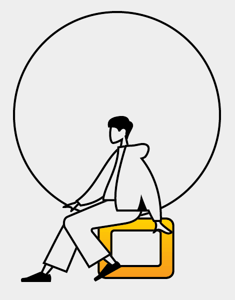
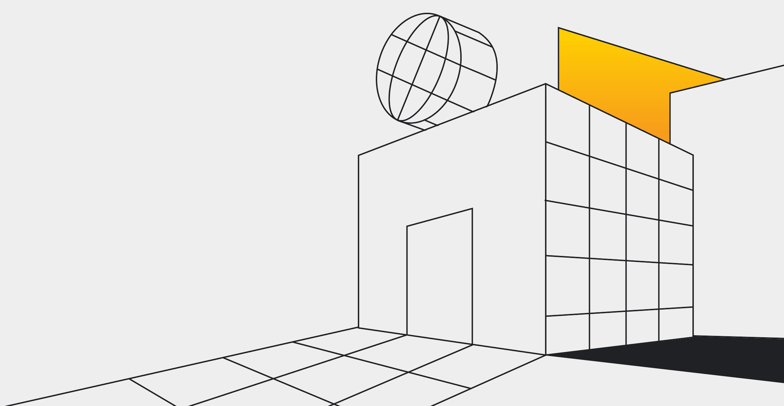
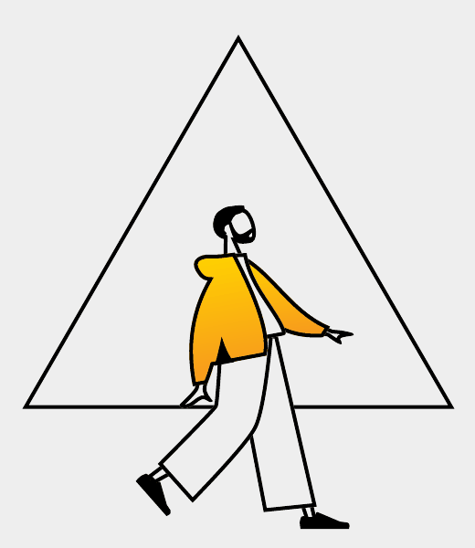
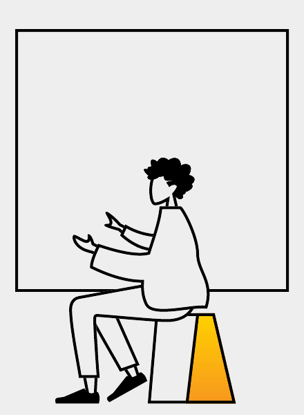
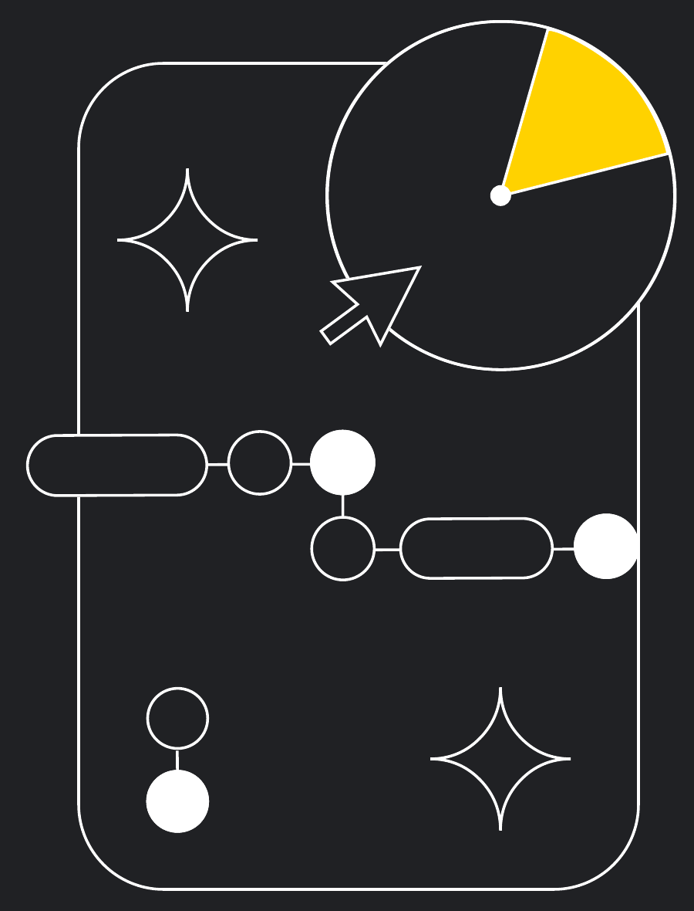
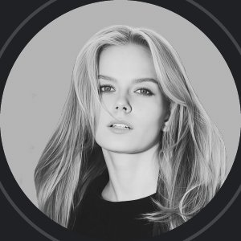

Начинающим
системным
аналитикам
Уже работаете системным
аналитиком и проектируете
ИС, но хотите подтянуть свои
навыки и расти быстрее

от бизнес-анализа и моделирования требований до
функционального и технического проектирования, архитектуры и
интеграции ИС.

Уже работаете системным
аналитиком и проектируете
ИС, но хотите подтянуть свои
навыки и расти быстрее

Работаете бизнес-аналитиком,
но понимаете, что критически
важно подтянуть технические
знания и навыки
по системному анализу

Закрываете в проекте и
бизнес-, и системную часть,
но чувствуете пробелы в
знаниях на отдельных этапах
и хотите работать увереннее
Научитесь понимать, как устроены информационные системы, какую роль играет
аналитик в проекте и какие задачи он решает. Разберётесь, как определять границы
и содержание проекта, выявлять потребности и формулировать бизнес-требования,
а также анализировать текущие процессы и находить возможности для улучшений.
Основные темы:
Научитесь превращать бизнес-потребности в системные требования, описывать логику
работы будущей системы и структуру данных, прорабатывать пользовательские сценарии
и взаимодействия компонентов. Разберётесь, как согласовывать требования, управлять
версиями и обеспечивать прозрачность для команды и заказчика.
Основные темы:
Разберётесь в архитектуре ИС: из каких компонентов она состоит, как сервисы
взаимодействуют между собой и с внешними системами. Научитесь понимать архитектурные
стили, основы интеграций и подходы к проектированию и эксплуатации реляционных
и нереляционных БД. Эти знания помогут принимать технически обоснованные решения.
Основные темы:
Научитесь проектировать интерфейсы взаимодействия систем и внутреннюю логику решения.
Освоите основные типы API, подходы доменно-ориентированного проектирования
и моделирование структуры и поведения объектов в UML. Разберётесь, как описывать
взаимодействия компонентов и формировать артефакты для реализации системы.
Основные темы:
Развитие в роли — это не только про «харды», но и про умение общаться, мыслить
критически и выстраивать рабочие отношения. Все тренинги проходят очно,
а часть — совместно с участниками других направлений школы.
Вы научитесь выстраивать общение так, чтобы достигать результата: определять цель
коммуникации, подбирать аргументы и объяснять сложное простым языком.
Вы разберёте, как анализировать информацию, замечать когнитивные искажения, находить
логические ошибки и формулировать обоснованные выводы.
Вы научитесь распознавать манипуляции и неконструктивное поведение, корректно реагировать
на сложные диалоги и поддерживать рабочее взаимодействие даже в конфликтных ситуациях.
Фактическая нагрузка корректируется с учётом результатов входного тестирования и уровня подготовки.
Важно заранее учитывать этот объём — программа длительная, комплексная и требует регулярного вовлечения.
Основная часть программы проходит онлайн
в живом формате. Это сочетание лекции
и практики: вместе разбираете материал,
работаете в мини-группах.
Можно задавать вопросы, уточнять
непонятное и получать обратную связь
прямо во время занятия.
Несколько раз за программу встречаемся
офлайн — чтобы глубже проработать сложные
темы и знакомиться ближе с участниками.
На очных сессиях проходят практические
тренинги и тематические митапы
с внутренними экспертами.
Все материалы собраны в LMS: записи занятий,
презентации, полезные ссылки, конспекты
и дополнительные материалы.
Здесь же можно смотреть прогресс
по модулям и понимать, на каком этапе
обучения вы сейчас.
В конце каждого модуля — короткий тест до 30
минут. Он помогает понять, что уже
закрепилось, а к каким темам стоит вернуться.
Результаты помогают и нам — понять, где группе
нужна дополнительная поддержка.
В чате можно быстро задать вопрос
или обсудить темы с другими участниками
и преподавателями. На связи также куратор,
который помогает и напоминает о важных шагах.
Это также пространство для неформального
общения — место, где формируется
и развивается своё сообщество.
В мини-группах вы работаете с коллегами из
других продуктов и проектов — каждый
приносит свой опыт.
Вместе решаете общие задачи, поддерживаете
друг друга и обретаете связи, которые остаются
после программы.
В это время нужно успеть пройти все шаги, чтобы попасть на отбор.
Это обучение не для полного старта
с нуля — нужен базовый уровень.
Тестирование помогает понять, готовы
ли вы к программе сейчас, и не станет
ли нагрузка чрезмерной.
Проходите тест честно. Нам важно увидеть ваш реальный
уровень, чтобы подобрать подходящую траекторию.
После теста на странице программы
появится кнопка «Подать заявку».
В анкете важно ответить
на вопрос «Для каких задач вам нужно
это обучение?» — конкретика помогает
понять вашу мотивацию и актуальный
контекст работы.
Избегайте формулировок “для общего развития”.
Если пока сложно сформулировать — возможно,
сейчас не время для обучения.
Отправьте короткое видео
до 3 минут координатору
Арине Морозовой.
Видео помогает нам
лучше понять вашу мотивацию
и повышает шансы при отборе.
Обучение длится несколько месяцев и проходит в рабочее время. Поэтому важно заранее
обсудить своё участие: подходит ли период, есть ли возможность выделять время,
видит ли руководитель ценность для вашего развития по этому направлению.
Обсудите участие заранее — важно вовремя получить согласование
и “сверить ожидания”, чтобы обучение прошло спокойно и осознанно.

После закрытия заявок мы формируем общий рейтинг.
На решение влияют несколько факторов:
Если что-то понадобится уточнить, мы можем
написать вам или вашему руководителю.
Итоговое решение согласовываем с HR-партнёром.
Письма с решением отбора (принят/ отказ)
и дальнейшими шагами придут на почту 23 декабря.
Количество мест ограничено, поэтому отказ не всегда
говорит о вашей подготовке.
Если обучение совпадает с вашими целями и планами развития,
и вы готовы вкладывать время и силы — присоединяйтесь.
Часто задаваемые вопросы
Небольшой разрыв — ок. Но если текущая деятельность совсем не связана с направлением, обучение
может быть слишком сложным. Входное тестирование и мотивационные вопросы помогут понять,
подойдёт ли программа.
Нет. Оно оценивает ваш текущий уровень, чтобы понять, готовы ли вы к программе и какая траектория
будет посильной. Тестирование работает в обе стороны: если набран небольшой балл, программа
окажется слишком сложной, а если результат очень высокий — скорее всего, мы не сможем дать вам много
нового. Возможно, тогда вам будет интереснее присоединиться к школе в роли эксперта.
Да, но обучение проходит в рабочее время и требует регулярного включения. Если у вас уже есть длительная
программа или высокая загрузка, важно заранее обсудить это с руководителем и спланировать свой график.
Вы можете попасть в резерв — пригласим при появлении места или в следующий поток.
Если будет отказ — можно попробовать снова в следующем наборе или выбрать другие
направления обучения.
Да, участники, успешно выполнившие требования программы, получат сертификат.
Программа не гарантирует повышение или новую роль, но может повлиять на карьерные перспективы,
если появятся подходящие задачи или вакансии.
